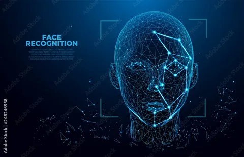
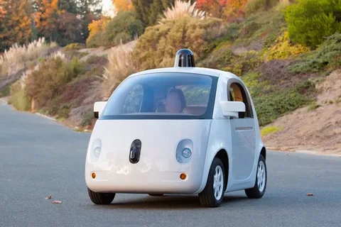

Искусственный интеллект (ИИ) — это не инструмент или программа, а отдельное направление компьютерных наук. Специалисты по ИИ разрабатывают системы, которые анализируют информацию и решают задачи аналогично тому, как это делает человек.
Специалисты по ИИ разрабатывают системы, которые анализируют информацию и решают задачи аналогично тому, как это делает человек. ИИ использует алгоритмы, которые позволяют компьютеру обрабатывать большие объёмы данных и находить в них закономерности. На основе этих закономерностей он может делать выводы, предсказывать события или принимать решения.
Распознаванием изображений называют информационную технологию, которая была создана для того чтобы получать и понимать снимки реального мира, преобразовывать их в цифровые данные, для последующего анализа и обработки. В этой области активно применяется машинное обучение, технология распознавания образов, а также интеллектуальный анализ нововведений.

Беспилотный автомоб (также беспилотник, робомоби́ль, самоуправляемый автомобиль, автономный автомобиль, автомобиль с автопилотом, умный автомобиль) — автомобиль, оборудованный системой автоматического управления, который может безопасно передвигаться без участия человека
